Interview CATAL DESIGN
2022.04.27
数々の有名ファッションブランドのPRを手掛けるmurroficeのディレクターである傍ら、大手ブランドやメーカーのブランディングや企画開発も手掛ける中室太輔さん。その多彩なクリエイティビティは、着こなしにも現れています。国内外のファッション誌でピックアップされる氏の“スタイルの作り方” を教えてもらいました。
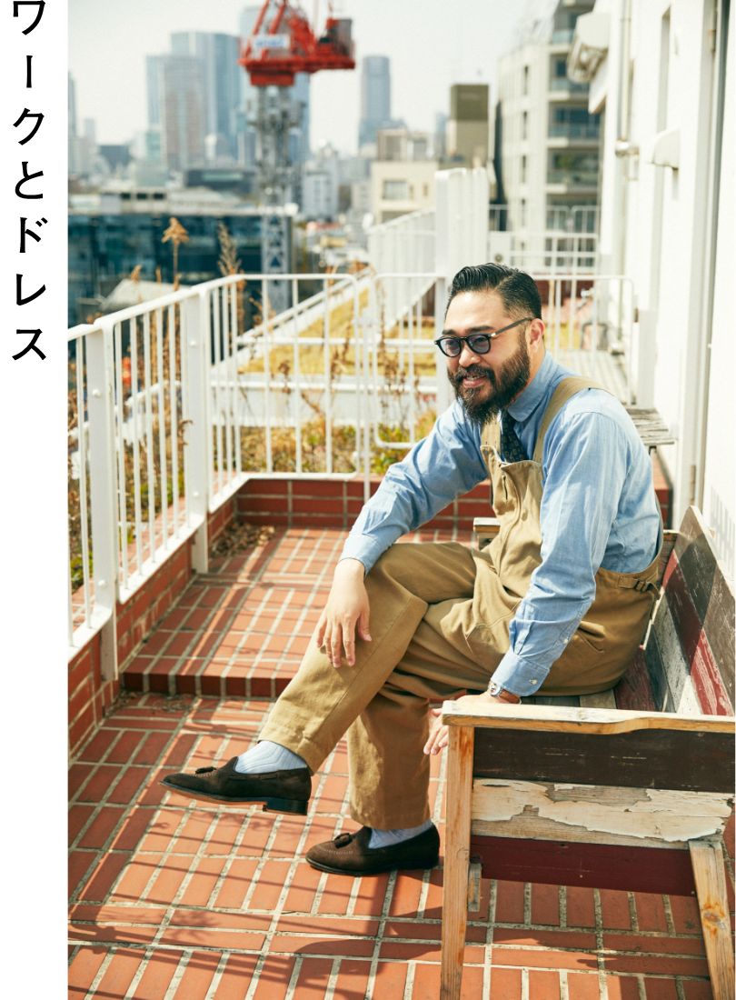
「ワークテイストのオーバーオールを、タイドアップとレザーシューズでカジュアルアップ。ここにTシャツやスウェットだと、僕の場合本当の職人に見えてしまうので（笑）。シャツとソックス、オーバーオールとシューズの色味を合わせているのがポイント。なるべく色味を抑えるのが僕の好みです」
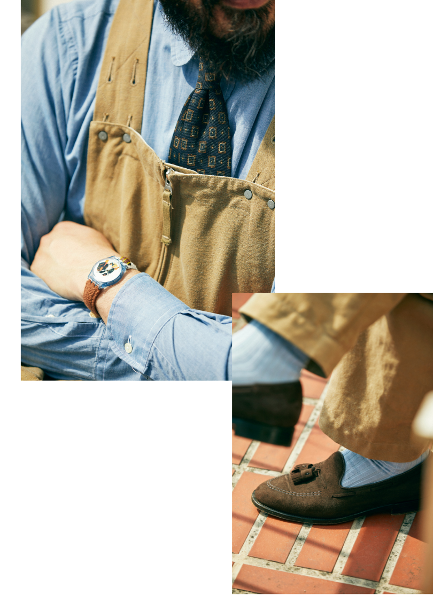
「時計は1992年製の〈スウォッチ〉。文字盤にセントバーナードが描かれ、ベルトもリアルな犬の毛のように起毛した素材になっています。このベルトは替えがきかないので、すごく大事に使っています。オーバーオールは〈キャプテンサンシャイン〉」
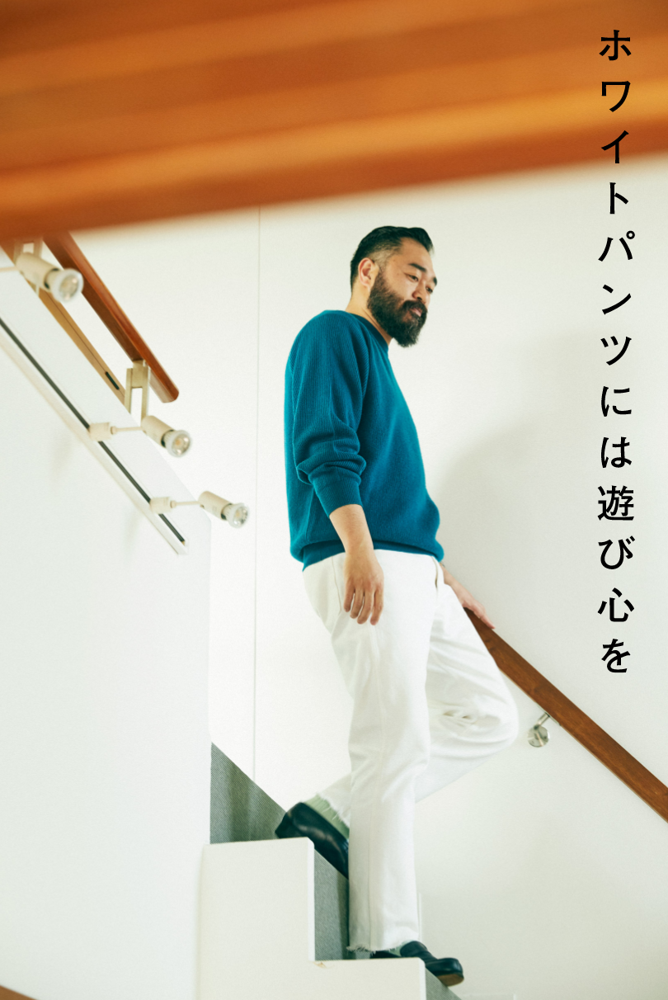
「白パンツの着こなしは爽やかになりすぎるとなんだかむず痒いので、ちょっとずつハズすようにしています。例えばニットにヴィヴィッドな色を選んでみたり、パンツの裾を自分でカットオフしてみたり。そうすることで白パンツ特有のコンサバ感も回避できるかなと。ニットは〈ヘリル〉でパンツは〈シオタ〉です」
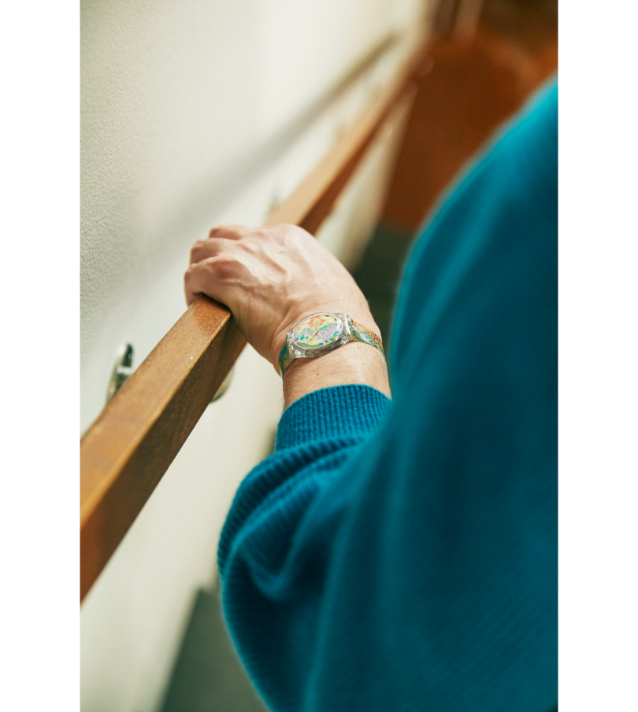
「この〈スウォッチ〉はMOMAストアの限定デザイン。クリムトのアートがプリントされています。シンプルな着こなしにも、スウォッチの遊び心はすごく役に立ちます」
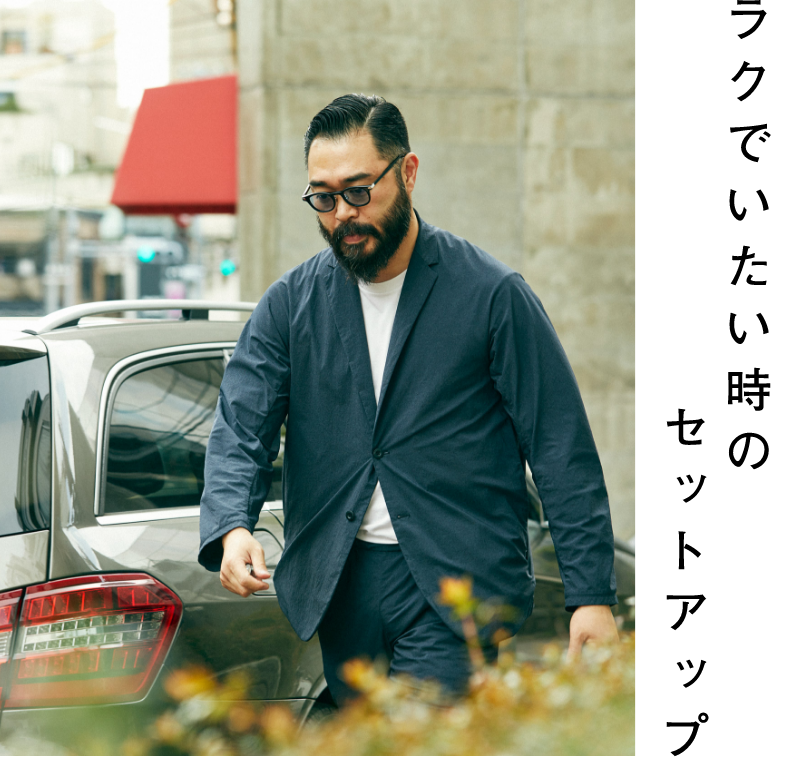
「〈テアトラ〉というブランドのセットアップスーツです。これ１着で様になるから着こなしもラクだし、元々、座位でも窮屈さを感じさせないよう設計されている服なので、車移動の時も便利。シルエットも綺麗で、大好きな洋服のひとつです」
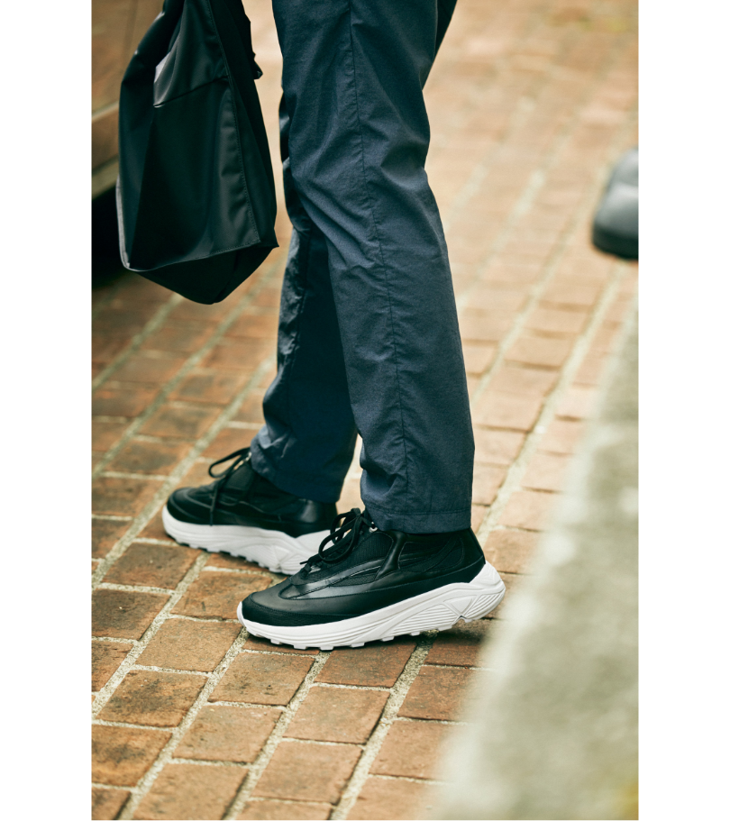
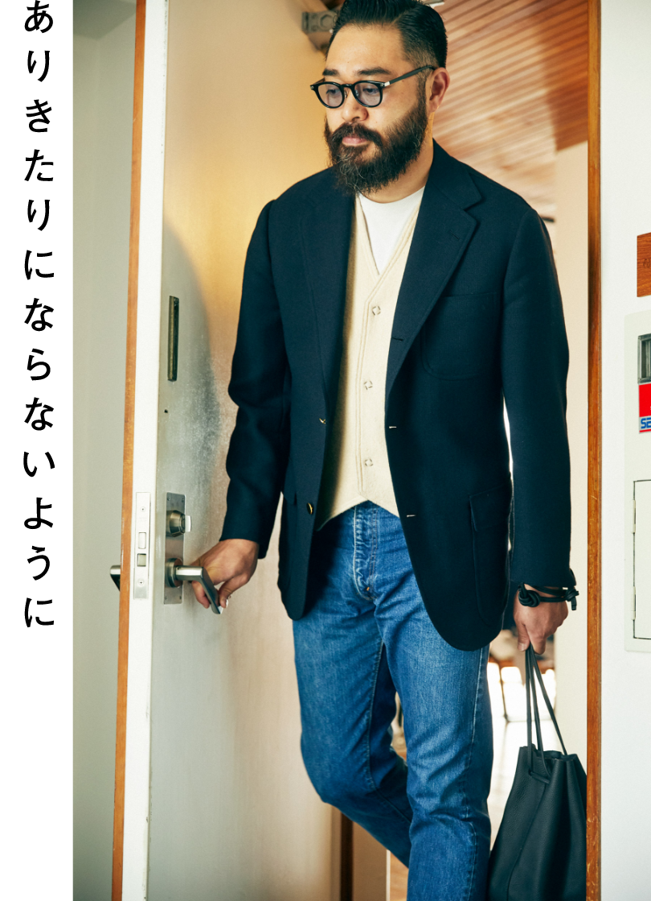
「ジャケットは〈ケイド〉のオーダーメイド。僕は体が大きいので、ジャケットはオーダーじゃないとピッタリ合わないんです。パンツは古着の70年代の〈リーバイス〉505。全体的に柔らかな色落ちが僕好み」
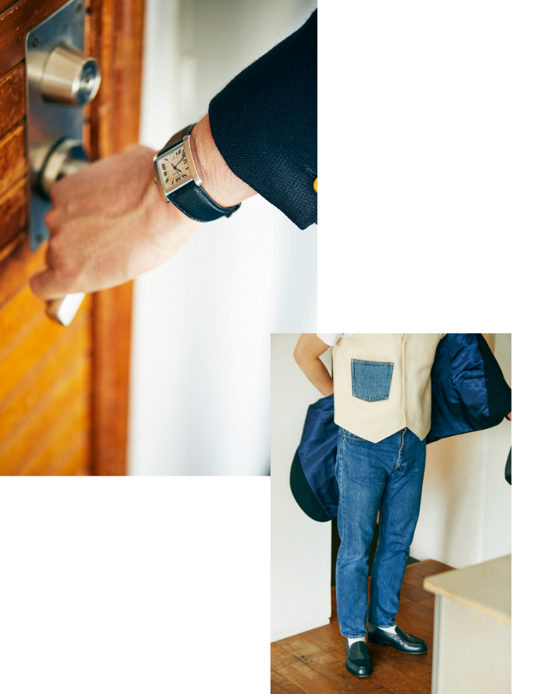
「インナーをシャツにするといかにもトラッドスタイルになるので、あえてクルーネックでカジュアルダウン。〈サンシー〉のベストはポケットがデニム生地になっていて、ふとした時に遊び心をきかせてくれます。ベーシックな着こなしの時こそ、こういう意外性も大事にしています。時計は20年以上前に購入した〈カルティエ〉のタンク」
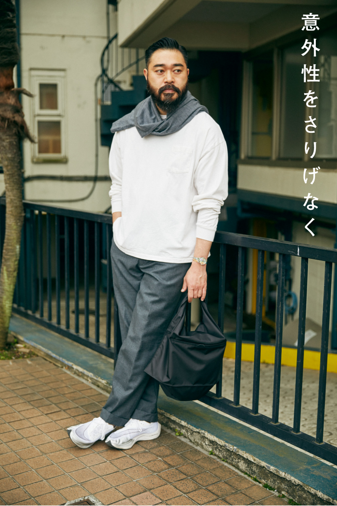
「グレーと白のミニマルな着こなしですが、首に巻いているのはストールではなく〈LE〉のハイゲージニット。〈ケイド〉でオーダーで作ったパンツに〈ナイキ〉の中でもハイテクなスニーカーを合わせています。色数をできるだけ抑えるのが好きな僕ですが、その分、ちょっとした意外性を遊ぶようにしています」
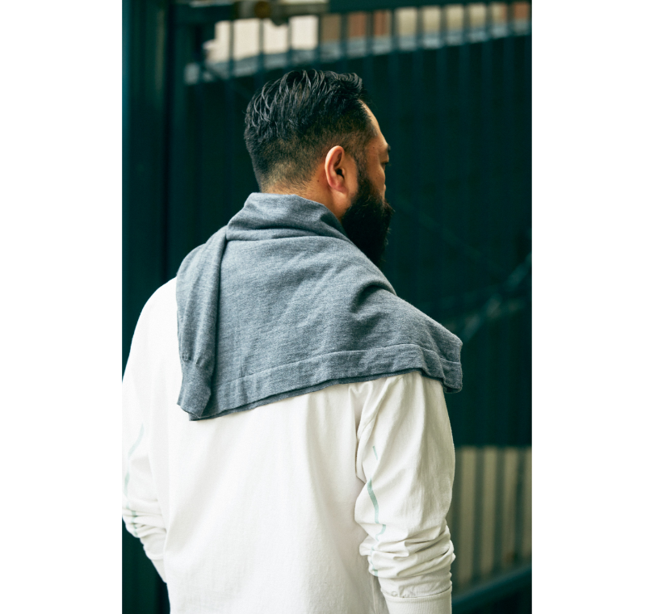
「カットソーは肘のところにさりげなく配色のラインが入っているのもポイント」
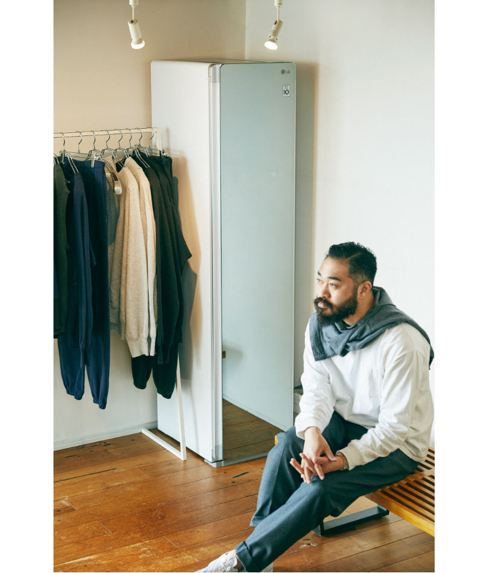
「もちろん存在は知っていたし洋服を扱う仕事なのでとても気になっていたのですが、きっかけがなくてなかなか手に入れられずにいたLG Styler。今回ショールームに設置してみて、改めてその必要性を実感しています。僕らはブランドからお預かりした洋服を、スタイリストやエディターにお貸し出しして、雑誌などのメディアで紹介してもらう仕事。返却された洋服をリフレッシュするためには、欠かせないアイテムだと思います」
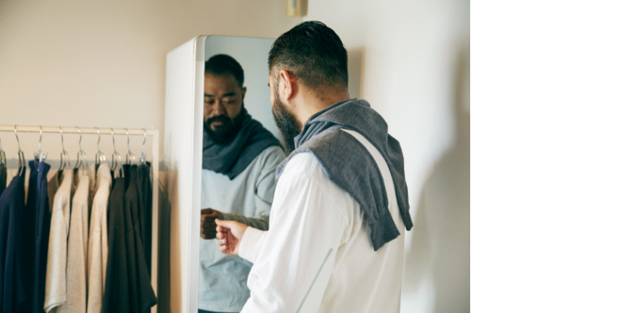
「匂いの問題を解決したりシワを伸ばしたりというのもそうですが、実は僕が一番期待しているのは、洋服の風合いが蘇ること。スチームでこまめにケアすることで、洋服の素材の良さをもっと楽しむことができるんじゃないかと思っています。せっかく気に入って手に入れた洋服たちは、より良く、より長く楽しみたいですから」
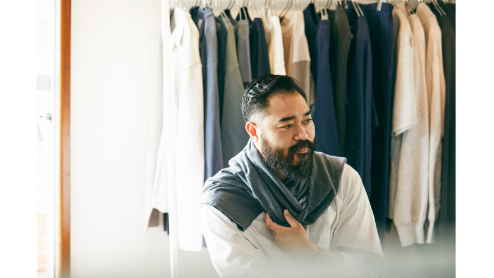
中室太輔（なかむろたいすけ）
1981年東京都生まれ。セレクトショップ〈エディフィス〉で販売員、プレスを経て独立。2008年にPR・ブランディングオフィス「muroffice」を設立。現在、同オフィスの代表兼ディレクターを務める。そのほか、人にフォーカスしたECモールサイト〈IAC / Internatinal Association of Creators〉のブランディングディレクター、バッグブランド〈MONOLITH〉のディレクター、ソックスブランド〈Kleuren〉のディレクターも務める。
Interview CATAL DESIGN